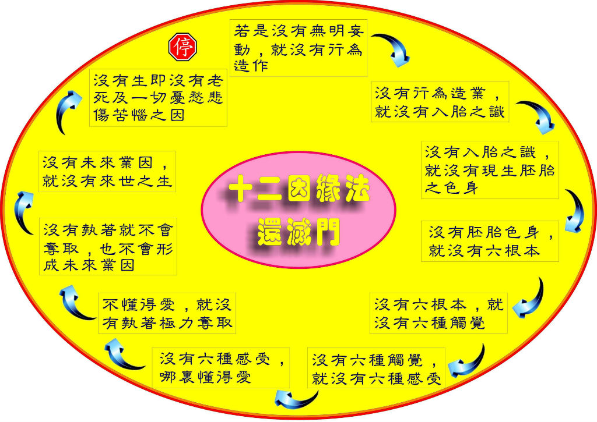
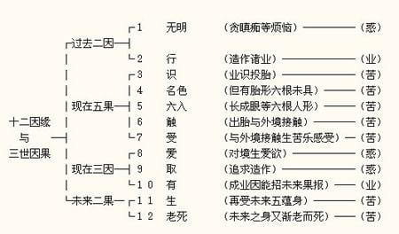
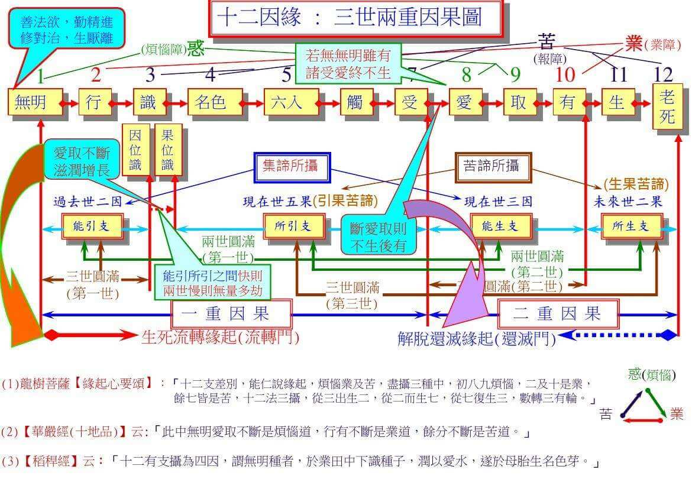

十二因缘是佛教的基本道理，初学佛者要学习佛法，首先就得认识三宝、四圣谛及十二因缘。根据经典的记载，佛陀在菩提树下通过观十二因缘而觉悟。十二因缘说明了我们有情众生在六道中流转生死的前因后果。在生死轮回的流转中，没有任何真实的快乐，只有烦恼、业行及苦果，也就是惑、业、苦。它们相依，因缘生灭的相续流转，让我们产生一个幻觉：我们经历了一个人生的过程，有一个生命在生死轮回，然而真相却是：在这生死轮回的流转中，没有主宰者、没有作者、也没有受者。
佛说十二因缘是一大苦聚，我们学习十二因缘的目的就是要明白苦在哪里，可以从十二因缘当中怎样得到解脱。
十二因缘又称为十二缘起支。此十二支互相为因果，因为一个因缘升起，而造成另一个因缘也生起，故佛经常说：此有故彼有，此灭故彼灭。这句话的意思是：有这样的东西生起，所以另外一样东西也跟着生起。有这样的东西消灭，另外一样东西也跟着消灭。
一、三世二重因果
第一重因果：过去因到现在果。
过去因：无明是过去迷惑，行是过去造业。
（1）无明：我们迷惑无知，对善恶因果不明白，于佛、法、僧三宝不明白，也不知不觉，这就称为‘无明’。在十二因缘中的‘无明’是过去世烦恼的总称。
（2）行：因为无明使我们迷惑，发动心驱使身，口，意造业，此称为‘行’。此造作产生将来的果报，即是我们今世所受的善恶诸业的果报，所以‘行’就是业报，使我们投胎轮回生死。
现在果：识、名色、六入、触、受是现在果，并且是苦果。
（3）识：众生前生死时，名色（精神与物质）的活动散灭，而转成另一系列的精神活动。好像前世是人，死后转生为乌龟，那做人的精神活动就灭，转变成为乌龟的精神活动。因惑业导致，此‘识’重新入胎。此‘识’与前六识（眼、耳、鼻、舌、身、意）不同，在此处特别指入胎的‘识’。在南传佛教只说为‘识’，但大成佛教的唯识宗说是第八识－－阿赖耶识。我们死后，生前的名色散掉，心识继续活动，形成意生身，也就是中阴身，它能够入胎。
（4）名色：名指心，色指身，名色就是身心。识入胎后，身躯及精神组成胞胎。胞胎渐渐长成，物质的身躯慢慢的形成，就有六根，精神活动也慢慢产生知觉。在这成长的过程中，当它六根还没圆满生成时，精神活动成为‘名’，身躯的生长称为‘色’。实际上现在我们也有‘名色’，即是眼前身心的精神称为‘名’，身躯称为‘色’。当胎儿生长时，六根未具，精神与物质的活动，称之为‘名色’，这是为了区别它们之间的不同，而特别给予的名称。
（5）六入：名色慢慢生长，六根生出来后，就有‘六入’，我们借助它们可以了解外境。‘六入’又名‘六根’，即眼、耳、鼻、舌、身、意。因为‘六识’从此生起，像树根能长出树木，故称为‘六根’。胎儿就从母胎中出来后，六根就完全具足了。
（6）触：根、尘、识和合的心理作用，成为‘触’。这是一个心理作用，并非两个东西接触之意。胎儿从母胎中出来后，六根就接触到外境。胎儿一出世，第一个接触外境的是身触，而第一个受是苦受。同样的，眼、耳、鼻、意，与外境接触时，也产生眼触，耳触、鼻触、舌触和意触。由识至受皆由过去业力引发，因为不自在所以都是苦果。
（7）受：有了这个触后，就可感受外界的事物，而生起苦受、乐受和不苦不乐受也就是舍受三种。
十二因缘从‘无明’、‘行’、‘识’、‘名色’、‘六入’、‘触’一直到‘受’，这些都是因为过去无明造业，现在承受的果报，也就是第一重因果：过去因到现在果。
第二重因果：现在因到未来果。
现在因：‘爱、取’是现在迷惑，‘有’是现在造业。
（8）爱：我们有了受，就迷在其中，对于所受之事物产生贪爱。因为有了受就有‘爱’，对这个受染着、渴求。比如用黑布包住眼睛，整天不让它看东西，肯定它受不了，会觉得很辛苦。眼睛整天爱看东西，对境界贪爱不以受为苦，使我们对这个贪爱产生种种的执着。
此贪爱有很多种，主要有两种：一叫境界爱，比如我们对于所看到的东西起爱染心。二叫自体爱，即是我们贪爱有一个‘我’，贪爱这个身体是‘我’。由此贪爱引发一切烦恼而起种种造作。
（9）取：由于这个贪爱心加深执着，不愿意舍离，称为‘取’。不止不愿舍离，还希求将来获得更多，即是希求将来有。‘取’可分为四种：
一是欲取：我们执着，希望获得更多自己贪爱的东西，称为欲取。
二是见取：对于我们的知见、思想起贪爱，追求更丰富的知识，认为自己懂得道理是最好、最优胜的而执着它，称为见取。
三是戒禁取：也是一种贪爱，执着守持某些戒律能解脱，能得福报等等。
四是我语取：对‘我’的贪爱。
这些执着都是贪，是我们过去的业习，现在显现出来。比如你有抽烟得业习，现在眼前有一只香烟，就对他起贪爱，没有抽烟业习的人，就无此贪。我们过去有种种业习，现在境界现前（眼前、耳前或者心前），就起种种贪爱。在这十二因缘中的‘爱、取’即是眼前的迷惑，也就是一念‘无明’之心。无明有贪、嗔、痴等种种的烦恼，但是此十二因缘中特别指的是贪爱，它最严重，可以引发业力形成将来的果报。因为我们渴求、贪爱、使到将来它形成果报，所以在十二因缘中，贪爱占很重要的位置，因为有了‘爱、取’，所以将来就会产生来‘有’。
（10）有：因为我们执取渴求，希望将来拥有许多东西，因执着而产生了将来之‘业有’，称为‘有’，这个‘有’又称为‘三有’。
一者、欲有：即是欲界的业报；
二者、色有：即是色界的业报；
三者、无色有：即是无色界的业报。
此（业有）由爱、取（烦恼）所发动之身、口，意三业而生之新业因，令此生死后，再生之识得到滋润。
未来果：生、老死是将来的苦果。
（11）生：依爱、取形成的惑业，成为业力，使苦果不能止息，继续发生，我们的身体败坏后，未来世再从新投胎受生。
（12）老死：有生故，将来必有生理及心理退化、贪生怕死、厌老死等身心之苦，故说五蕴之十二因缘相续，无有穷尽，它形成一连串的因果。
十二因缘就是因为有无明，所以有行（即造作）。因为造业而入胎，故有入胎之识。因为入胎，名色就展开活动，它扩展、扩大，就产生了六入。胎儿的六根圆满后就出世，然后与外面的境界接触。根、尘、识和合产生触的心理，有了触就产生受，过去我们贪爱的业习就会引发出来，爱即生。爱加深就有取，使我们希求它再来、再有，就形成了有。有将来的业，促使我们再来生，再来死。
这十二因缘就是有情众生的流转生死的前因后果，它的流转并不是直线式，而是一个轮转。即过去的无明，造成现在的受。现在的无明，就是爱、取。现在的爱、取，就是下一世的无明，它一直循环不息，周而复始。在十二因缘中，我们要知道有迷惑，因迷惑而造业，造业后我们就要受业的果报—苦果。在受苦果的当中，我们继续迷惑，继续造业，造业后又再受报，这样的循环作用，称为十二因缘的流转。
二、缘起
一切诸法都依托众缘和合而生，缘尽则散灭。众缘和合时我们就以为它生，因缘散了我们就以为它灭，故名缘起。缘起是指在因缘作用下之法性，是一种原理、法则。
三、缘生
因缘成熟，果报生起，称为缘生。缘生是指缘起法中所生之法，它是一种果报。
四、缘生法之共同性
（1）无主宰：凡是因缘所生之法，都没有主宰者。我们以为事间的一切东西，总是有个主人，有个主宰者，这是一种执着。十二因缘告诉我们没有作者，没有主宰者，那是因为我们无明、无知，产生了种种造业的行为，因而促使我们入胎产生识。现在让我们来看这个识，识是由谁主宰？它没有人主宰，只不过是无明和行的产物。比如一粒种子，放入泥土中，加上阳光、水份与泥土，就发芽生长，这其中没有主宰者。
（2）无作者：无明缘行，行缘识，即无明生起行，行生起识。这当中无主宰。这其间也没有作者，就是无明作行，行作识，识作名色。从十二因缘来看，造业者是爱与取，那是因为迷惑而造业。迷惑的‘受’、‘取’并非我，故说无作者。
（3）无受者：在十二因缘中只不过是识、名色、六入，触、受在作用，这其中并没有人在受果报。我们总以为有一个‘我’在受果报，在感受苦乐，这是不对的，那不过是识、名色、六入和触等种种法在受果报。比如说：有一间房屋被火烧，难道我们说房屋在受果报吗？不是的。只是房屋里面木材等东西在燃烧罢了。它燃烧后就灭了，里面没有受果报的房屋，房屋只是我们起的一个名字，也就是说假有，非真实有。同样的，由识、名色、六入、触、受形成一系列活动，我们把它称为‘众生’，称为‘我’，实际上没有一个实体的‘我’在感受果报。
（4）无自作用：十二因缘当中，没有一个因缘可以自己单独起作用，必须依靠其他的因缘。好像我们的六根从胚胎来，胚胎从‘入胎的识’来，识从业报来等等，所以每一个都是靠其他的因缘生起，它不是自己在作用。
（5）从因生：因为不是自作用，也没有作者在做，故从因生。
（6）不自在：十二因缘的流转，是令我们不自在的。因缘的相生相灭，不是我们所需所要。甚至于这个爱、取也是因为过去的引发来的，里面并没有一个我要爱、我要取。
（7）托众缘转：十二因缘中的任何一支都不可以单独产生作用，它要依靠众多因缘引发，才能转来变去，所以说它需要托众缘转。
（8）无常、苦、无我：十二因缘中的每一支都是无常，如果它不是无常，就会保持不变，不必依众缘生。如果它不是无常，也不会促使其他法的升起。因为无常生灭，才会有不同的东西相续生起。因为无常所以本质是苦，苦就是不自在，不自在所以说无我。如果有人说：我要举手就举手，我要作什么就做什么，但这十二因缘的流转我不能舍弃，故那并不是属于我。如果是我，我要对你起嗔心，现在就可以嗔，但是如果是十二因缘，我要它嗔你，还要依众缘使它嗔才行，所以我要依种种因缘才能起嗔心。又比如我要你现在对母亲起嗔心，因为没有嗔的境，故嗔心生不起。我们对这十二因缘的流转不能做主，故它不是我。
（9）性空：在十二因缘的流转中，每一支都没有自性，没有自体，皆是因缘相生相灭，故说其本性空。我们听到‘空’，千万别误会是什么都没有。所谓性空是：我们所知的一切，没有真正的自体，不实在，它的本性是空的，称为性空。

五、十二因缘流转门
本师释迦牟尼佛觉悟时，他于菩提树下观这十二因缘，发现众生有生、老、病、死苦，故想要度化众生，使他们解脱。因此佛陀从十二因缘的老死开始逆次而观察：一切众生都得承受‘病’、‘老’、‘死’之种种痛苦，他以智慧发现到众生有‘老死’是由于有‘生’，有‘生’是因为有‘业有’，所谓‘业有’是欲有、色有、无色有，因为我们有了将来欲界、色界和无色界的业，它们会推动我们将来要重新出世－－生。佛陀观察到并没有‘我’在造业，而是身心（假我）对世间的种种事物产生了执取，渴求将来有，造成了有业报。我们有‘有’是因为有‘取’，有‘取’是因为有‘爱’，我们过去的业习对事物有贪爱，接触境界时，贪爱心就生起，对境界所看到的东西产生执着，而‘爱’的生起是因为有‘受’，我们的六根有苦受、乐受、不苦不乐受，我们贪求乐受。因为有乐受，造成我们业习中‘爱’的心生起，反之它则不生。假如我们天生是聋子，从没听过声音，那对歌声、鸟声等，就不会贪爱，正因为我们有感受得到声音，所以才会贪爱它。佛陀说我们有‘受’，就有贪爱，所以受是爱生起的原因。我们有‘受’是因为心依靠六根接触外境，根、尘、识产生‘触’，因为有‘触’，所以有‘受’。佛陀继续观察，发现有‘触’是因为有‘六根’，没有‘六根’我们的心就没办法与外境接触。接着佛陀又继续观察，发现‘六根’的形成是因为我们在母胎里有‘名色’的活动，所以产生‘六根’，佛陀说因为有‘名色’，所以有‘六入’。我们会受生就是有‘识’，我们死后，精神继续活动，我们会被业转去入胎，结果就在胎里成长。佛陀发现有‘识’入胎，就有‘名色’，那‘识’又是从那里来那？佛陀不再追察了。然后佛陀观察由于有‘识’故有‘名色’，因为有‘名色’，故有‘六入’，因为有‘六入’，故有‘触’，因为有‘触’，故有‘受’……顺观至有‘生’故有‘老死’，此称为流转门。

六、十二因缘还灭门
我们在十二因缘的流转中，以如何灭除它的角度来看，叫做还灭门。要怎样才能把老死灭掉？佛陀观察只要不‘生’，就没有‘老死’，灭三界‘业有’就不‘生’，如果我们不执‘取’，那‘业有’就不会生起。只要把‘爱’灭掉，‘取’就不生，因为‘爱’是过去的业习，只要把它灭掉，就不会执取了。‘受’灭则‘爱’灭，以此类推，最后只要无明灭掉，此大苦聚也灭。然后顺观无明灭故行灭，乃至老死亦灭。
七、如何截断十二因缘的流转
只要现在不造业，不迷惑，那现在的爱，取就断除，过去所造的业就好像无根的树，再也生不起，也就是说，这十二因缘告诉我们，过去的无明与业行延续到现在，如果我们觉悟不爱不取，就不会产生我见、见取见、戒禁取见等烦恼。无此烦恼后，我们就会发现十二因缘中的每一支都是无常、无我、缘生无性。即然如此，那又是谁在生？谁在受老死那？当这些执着都没有了，我们就会觉悟到没有一个众生在流转生死，受轮回之苦。只要觉悟现前的无明，在爱、取时不迷惑，我们就会发现这其中没有我。既然无我，就不会继续流转生死，同时也会发现到，所有的迷惑都没有了。我们在爱、取之前，感受外境的当时，觉悟它，不再去执取，这样就不受后有。
八、十二因缘的三世两重因果
无明与行是过去的因，识、名色、六入、触、受就是我们现在所受的果报。我们现在有爱、取就会造业，是现在的因，将来就有生、老、死，所以过去因是过去世，现在果、现在因是现在世，未来果是未来世，总共有三世。那么三世为什么又说两重因果？第一重因果是过去因形成现在果，第二重是现在因造成将来果。所以十二因缘中有三世两重因果。它又告诉我们惑、业、苦的轮转，因为迷惑造业，所以要承受业报之苦。我们在苦中又迷惑，迷惑又造业，造业又受苦，周而复始，没法间断与中止。

九、十二因缘的启示
佛所说的十二因缘中的十二支缘生法，其共同性质是无常、无我、没有作者、没有受者。佛陀还告诉我们生死流转真正因果之所在，不明白十二因缘者，就会误会这世间与人类都是上帝所创造的，或误会人是父母生的，以为人从前是什么都没有－－无因，突然间从母胎中出世，这些都是不正确的知见，我们学习十二因缘，以智慧观察而破除之。
我们的识入胎、名色、六入（六根）都不能改变；我们眼睛一直感受到柔和、鲜艳、暗淡等颜色的刺激；耳朵听到和谐或是刺激的声音等，这些由我们的六根与外境接触而产生的‘触’，因触而产生的‘受’，我们也都不能改变，然而我们要觉观它，把握它。假如我们很清楚的觉悟到这个‘受’的话，那必定会认识到它是不自在，是苦的，这时我们就不会有爱、取了。即是说我们现前的六根，接触外境时，觉悟到耳朵感受声音的苦、乐，眼睛感受颜色的苦、乐，那就有办法放弃爱、取。如果不能觉知，就会坠入爱、取中。也即是说，如果你对‘受’明明了了，那爱、取就有机会放下。如果我们对‘受’观察觉悟，然后来觉悟爱、取，使他们不再生起，如果我们能把握，那就可了生脱死。我们过去有无穷无尽的业与无明，但是现在的觉悟，就能够把它们全部丢掉。
打个比喻说：一个做母亲的人，对子女贪爱执着，儿女快乐，她亦快乐；儿女悲哀，她也悲哀。如果有一天她觉悟到：这个人跟我有一段因缘，前世与我的缘比较深，今世生活在一起，如此这般地做母子（女）罢了。你无需为他而悲哀，也不必为他而快乐，他有他的业，为什么别人的悲哀与快乐，你无动于衷？而子女的悲哀与快乐却能牵引你，使你喜上眉梢或牵肠挂肚？如果你观察到这一切都是缘份，看的很清楚的话，这个悲哀与快乐就会消除。讲的更简单一点：有钱人玩古董，古董是什么？是石头、破砖烂瓦？其中有何物值得你爱，使你执着？这个杯子有什么东西使你快乐？没有。但是一千年的杯子，你却对它有无穷的乐趣，爱不释手，那时因为你贪爱它。如果你观察到这也不过是个千年的杯子罢了，现在这个杯子也是杯，我为什么要执着千年的杯子那？如果你看清楚，把它放下，那就没事了。所以我们要观察贪爱是从哪儿生起，才能把贪的烦恼放下。其他的种种烦恼也是一样，如果我们能觉悟、掌握咱们的心念，爱、取不生，那么一切终归与寂静，烦恼不生起，内心一团平静，寂灭的境界，称为涅盘。
涅盘有两种：一是有余涅盘，二是无余涅盘。证悟阿罗汉果的圣者，是处在有余涅盘的状态，他没有爱、取了，这就好比一棵树，不加肥料和水，但是树根和树干还存在，继续等到这棵树老、死。因为阿罗汉有过去的业继续存在，如果他今生的身体舍报后，没有了‘受’、‘触’、‘六入’，那就好像树根断了，他再也不来受生，就进入了无余涅盘，那么我们就说他把这十二因缘这棵树的根都斩断，再也不能成长了，也就是从生死轮回中获得了解脱。